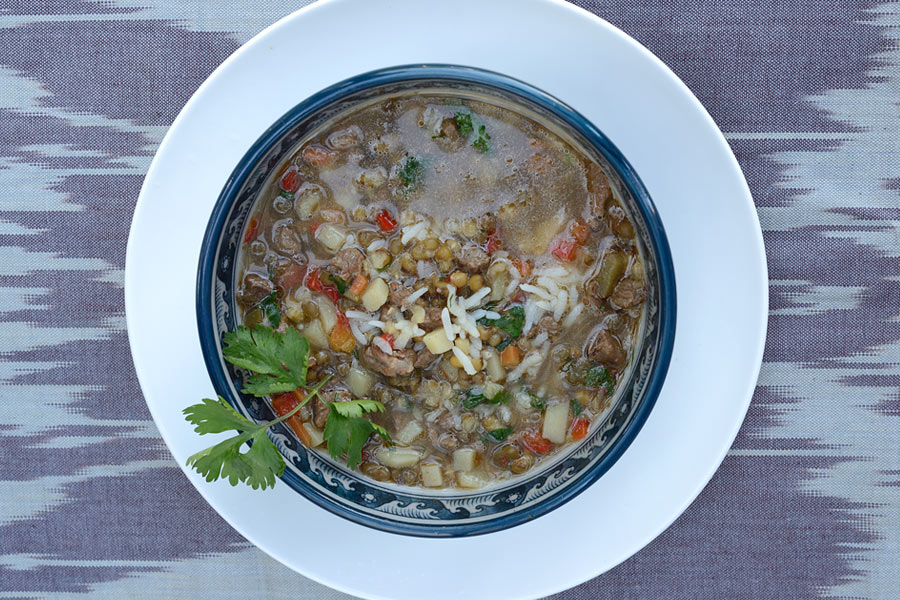

Mashhurda

Uzbek cuisine would not be complete without its many hearty soups. Mashhurda is a dish made from rice, mung beans and vegetables which can be served as either a first or second course.
Ingredients:
- 70-80 g mung beans (masha);
- 2 medium potatoes;
- 1 medium carrot;
- 120 g of cauliflower (you can take white cabbage);
- spices: bay leaf, 2-3 g of cumin, asafoetida, black pepper;
- 40 ml of vegetable oil;
- 50 g sour cream;
- salt to taste.
Directions:
- The beans must be sorted out and then rinsed. There are also processed beans on sale, which do not need to be sorted. Also, vegetarian mung soup can be prepared from sprouted beans that have not been heat treated. In this case, they retain the maximum useful properties.
- To make the soup cook faster, mung bean should be soaked in clean cold water for several hours, or better overnight.
- Cabbage must be disassembled into inflorescences. If cabbage is selected, it can be cut into strips or squares.
- You need to take a frying pan, heat the oil and fry the cumin in it for no more than 30 seconds. After that, the carrots are poured into the pan and fried until cooked.
- When the contents of the pan are ready, add carrots to it
- At the end, put the remaining spices, herbs. You can add coriander or turmeric to give the chicken and mash soup an oriental flavor. But the main thing is not to overdo it, otherwise the spices will kill the taste and aroma of the rest of the ingredients.
- Before turning off, add sour cream, stir well and let it brew. If desired, sour cream can be put not in the cooking process, but for each separately already at the stage of serving the dish.
ENJOY!
Back to main page